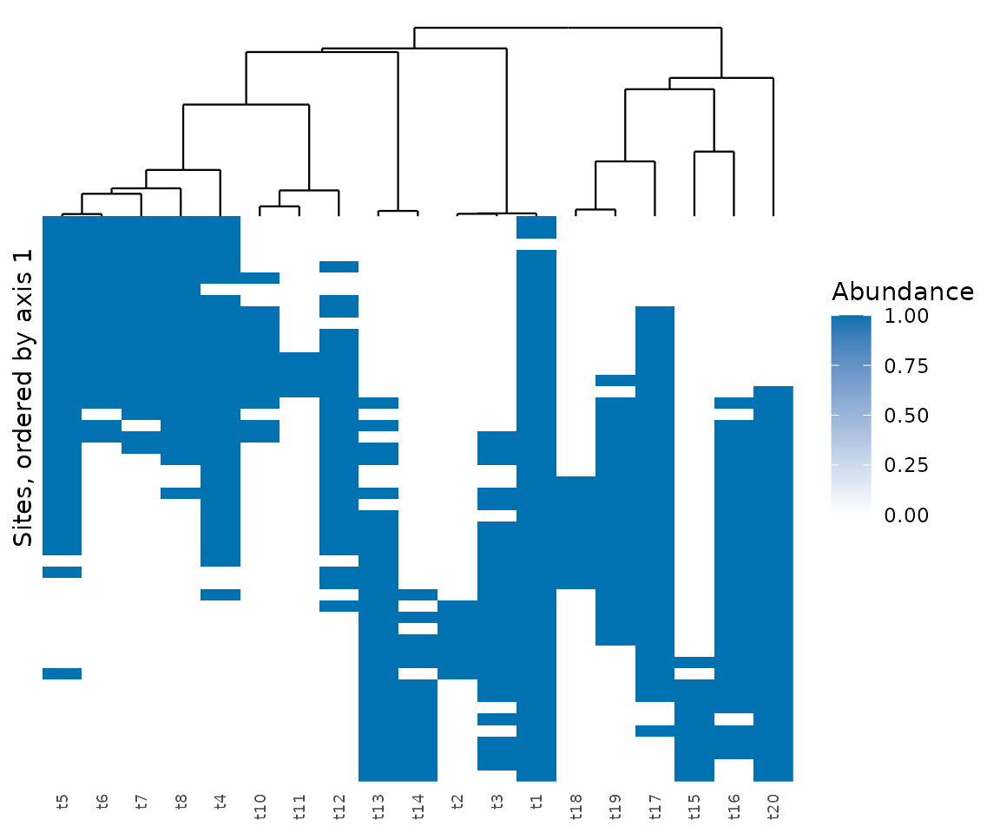
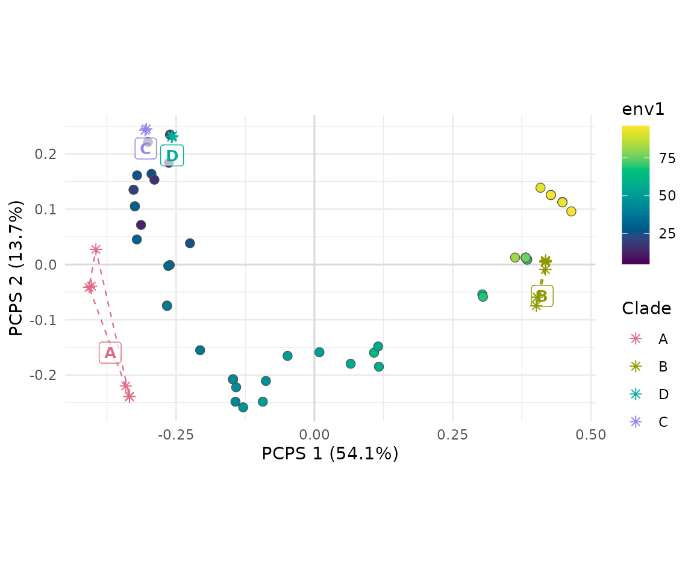

node_test() asks which clades respond to the
environment. Peres-Neto & Kembel (2015) proposed two frameworks that
ask whether phylogenetic composition follows the environment across the
whole tree, and both are in the package. The results below are
simulated.
library(comdynamite)
set.seed(1)
tree <- treeshapesim::sim_tree_shape(20)
traits <- species_traits(tree, lambda = 1, optima_range = c(-1, 101), rmax_range = c(0, 30))
env <- runif(50, 0, 100)
comm <- simulate_static(traits, env, incidence = TRUE)$abundance
keep <- rowSums(comm) > 0
comm <- comm[keep, ]
env <- env[keep]Phylogenetic community composition
pcc_test() takes the principal coordinates of the
distances among species, averages them within sites, and regresses each
average on the predictors. The test statistic is the variance of the
adjusted R2 across eigenvectors, and the value to report is the mean of
the positive adjusted R2.
pcc <- pcc_test(comm, tree, env, n_perm = 199)
pcc
#> <mc_pcc> phylogenetic community composition
#> mean positive adjusted R2: 0.0965
#> permutations: 199 free of sites, 199 of species; smallest possible p: 0.005
#> p (sites): 0.005 p (species): 0.005 p (max): 0.005Phylogenetic beta diversity
phylo_beta_test() starts from the distance between
communities given by phylo_beta(), the mean phylogenetic
distance between their species, and fits a distance-based redundancy
analysis.
beta <- phylo_beta_test(comm, tree, env, n_perm = 199)
beta
#> <mc_phylo_beta> phylogenetic beta diversity
#> adjusted R2: 0.221 pseudo-F: 14.9
#> permutations: 199 free of sites, 199 of species; smallest possible p: 0.005
#> p (sites): 0.005 p (species): 0.005 p (max): 0.005scores holds the sites on the principal coordinates of
the predicted matrix, which the authors suggest using to order sites in
a heatmap of the community matrix. plot_phylo_beta() draws
it, with species in the order of the tree, so that clades replace each
other along the sites when composition follows the environment.
plot_phylo_beta(beta, comm, tree)
Principal coordinates of phylogenetic structure
pcps_test() computes the principal coordinates of
phylogenetic structure (Duarte 2011; Duarte et al. 2016), the method of
the package PCPS (Debastiani & Duarte 2014). By phylogenetic fuzzy
weighting (Pillar & Duarte 2010), each species shares its relative
abundance with its relatives, in proportion to their similarity on the
tree, and the principal coordinates of the resulting matrix order sites
by phylogenetic composition. The test covers all the dissimilarity and,
separately, each axis in axes, whose share is
its part of the variation.
pcps <- pcps_test(comm, tree, env, n_perm = 199)
pcps
#> <mc_pcps> principal coordinates of phylogenetic structure
#> permutations: 199 free of sites, 199 of species; smallest possible p: 0.005
#> test share r2 statistic p_site p_species p_max
#> whole 1.000 0.4989 47.793 0.005 0.025 0.025
#> pcps1 0.541 0.9126 500.958 0.005 0.075 0.075
#> pcps2 0.137 0.0133 0.648 0.445 0.735 0.735Unlike the method of pcc_test(), which works on
eigenvectors of the tree, this one takes eigenvectors of the sites, so
scores can be plotted against the environment.
plot() draws the sites on the first two axes, coloured by
the environment, with each species as an arrow from the correlation of
its column of the matrix P with the axes.
plot(pcps)With many species the arrows are hard to read. clades
draws the species as stars grouped into clades instead, either the k
deepest clades of the tree or groups given by name, such as families, as
in Fig. 1 of Debastiani & Duarte (2014). The plot then shows which
lineages go with which sites.
plot(pcps, clades = 4, species_labels = FALSE)
The package PCPS also draws a curve of phylogenetic signal at the
metacommunity level (pcps.curve()), from regressions of
community-weighted mean traits on an increasing number of axes. In
simulations by its authors, the curve of traits with low or high
phylogenetic signal did not depart from that expected under Brownian
motion (Duarte et al. 2018), so it does not measure the signal of the
trait, and comdynamite does not implement it.
When sites are neighbours and the environment and the communities are
both autocorrelated, free permutations of sites reject far too often.
site_permutations takes a restricted null model, such as
torus_permutations() on a complete grid, in
pcc_test(), phylo_beta_test() and
pcps_test() alike. The help of pcps_test()
gives the rates, including those in a landscape with edges, where the
torus still rejects too often when fields are broad.
Reading the two p-values
All these functions permute sites, which breaks the link between
composition and environment, and species across the tips, which breaks
the link between composition and phylogeny. The association requires
both links, so the p-value to report is p_max, the larger
of the two. A small p_site with a large
p_species says that composition follows the environment,
but that the phylogeny adds nothing to it.
The scripts data-raw/validation_pcc.R and
data-raw/validation_phylo_beta.R compare the rejection
rates of these tests with those published.
Sites that are neighbours
Permutations of sites treat them as exchangeable. When they are
neighbours, site_permutations takes a restricted null
model, such as those of torus_permutations() for a grid on
a torus.
References
Debastiani, V. J., & Duarte, L. D. S. (2014). PCPS – an R-package for exploring phylogenetic eigenvectors across metacommunities. Frontiers of Biogeography, 6, 144–148. https://doi.org/10.21425/F5FBG22943
Duarte, L. D. S. (2011). Phylogenetic habitat filtering influences forest nucleation in grasslands. Oikos, 120, 208–215. https://doi.org/10.1111/j.1600-0706.2010.18898.x
Duarte, L. D. S., Debastiani, V. J., Carlucci, M. B., & Diniz-Filho, J. A. F. (2018). Analyzing community-weighted trait means across environmental gradients: should phylogeny stay or should it go? Ecology, 99, 385–398. https://doi.org/10.1002/ecy.2081
Duarte, L. D. S., Debastiani, V. J., Freitas, A. V. L., & Pillar, V. D. (2016). Dissecting phylogenetic fuzzy weighting: theory and application in metacommunity phylogenetics. Methods in Ecology and Evolution, 7, 937–946. https://doi.org/10.1111/2041-210X.12547
Peres-Neto, P. R., & Kembel, S. W. (2015). Phylogenetic gradient analysis: environmental drivers of phylogenetic variation across ecological communities. Plant Ecology, 216, 709–724. https://doi.org/10.1007/s11258-014-0405-0
Pillar, V. D., & Duarte, L. D. S. (2010). A framework for metacommunity analysis of phylogenetic structure. Ecology Letters, 13, 587–596. https://doi.org/10.1111/j.1461-0248.2010.01456.x